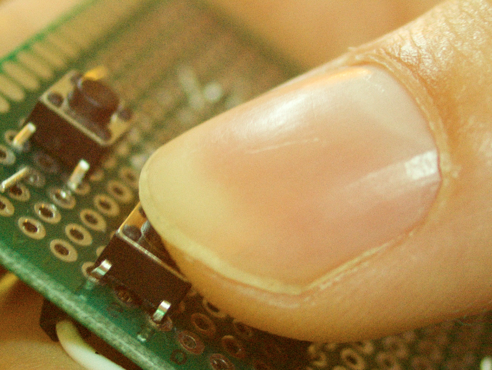
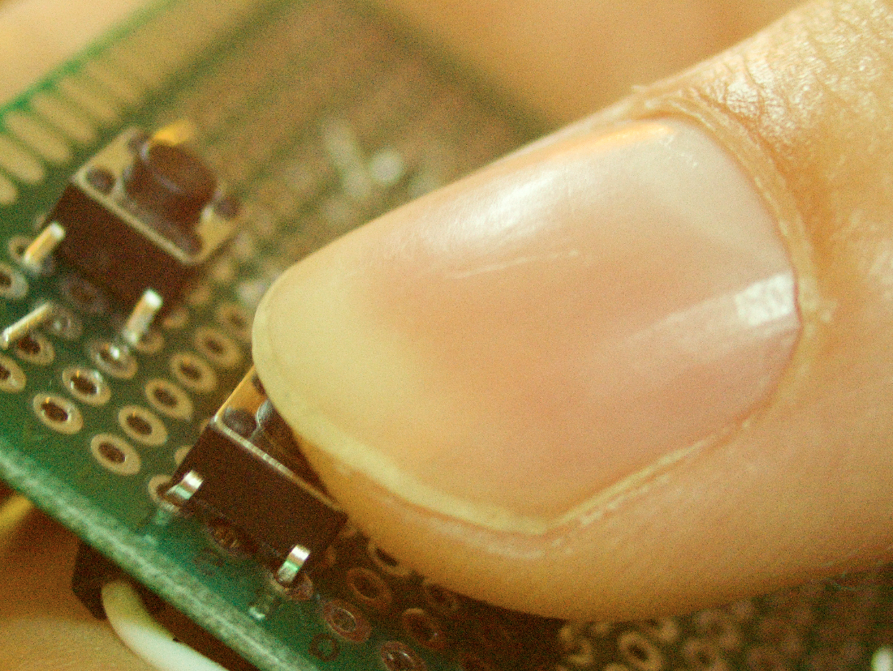
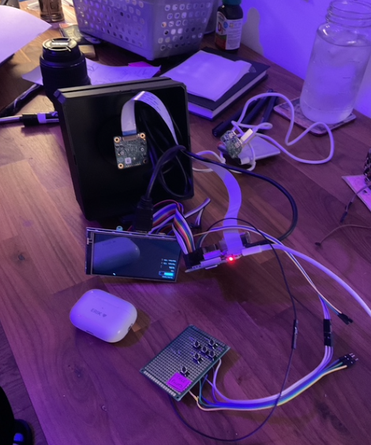
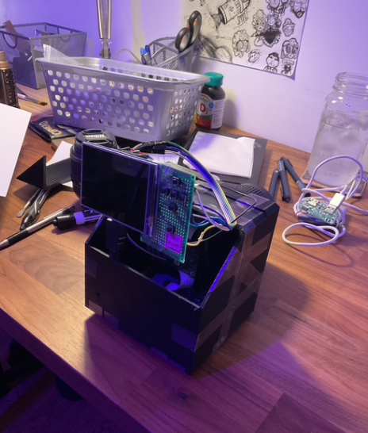
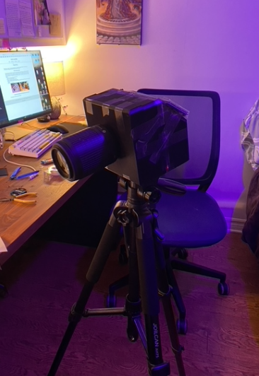
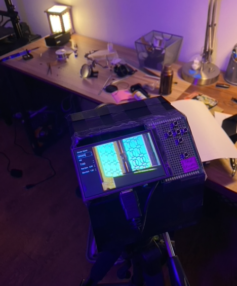
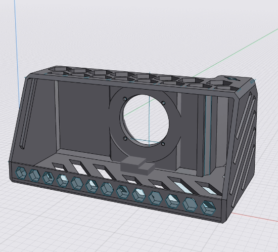
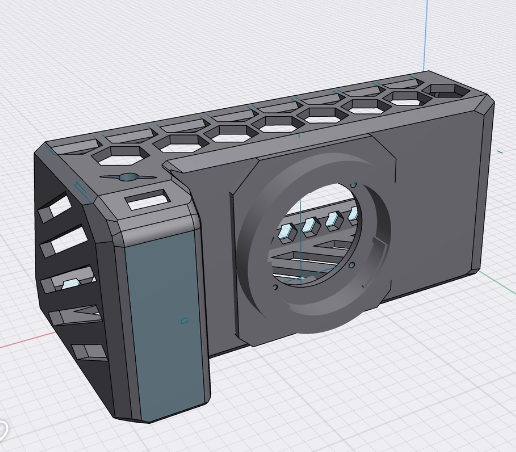
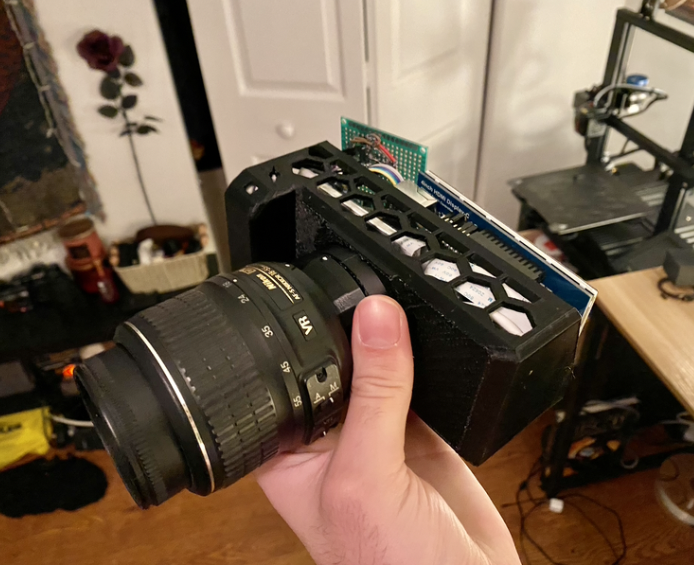
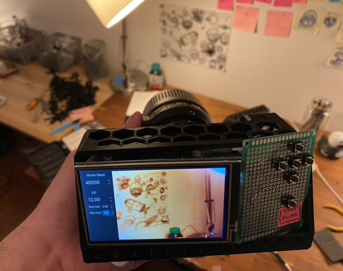

Programming
Here's where I showcase my coding projects! From A.I. to custom made digital cameras! I love to tinker with different bits of technology while learning, exploring and trying new things :)
Making my own Camera
Or at least trying to...
I love photography and cameras! I've always been fascinated with the way old and new cameras worked.
I read and learned about all their inner workings on my free time because I was so entriguied as to how they worked!
I had a Nikon 35mm Camera from the 1970s and shooting with it made me fall in love with cameras even more and now I can't be stopped!
I'm also a big sucker for making projects with the Raspberry Pi, so when I saw that the Pi foundation made a high
quality camera module, I knew what my next big project was gonna be.
First step was; Putting the parts I needed together. I needed:
- A computer - the Raspberry Pi 4! :)
- A sensor - The HQ Camera Module
- A Display
- A Battery
- Buttons for control
- A case to hold everything
- Some sort of mount for the camera and the lenses
Version 0.1
This was the first version of the camera that I put together; I call it, Version 0.1!
Held togehter by good ol' carboard and hot glue, this was just what I needed to test out my idea.
It served its purpose, and it was able to take pictures and it got me hopeful that this project was do-able, but it was
far from perfect. 1) It didn't have any buttons so I had to bring a keyboard around to type commands into the terminal. 2)
I couldn't see what I was taking a picture of since I didn't have a GUI 3) It was really awkward to hold and use and so much more :(

So I desperataly needed adress these issues...
Version 1
This was the first design that I 3D printed. It's just a rectangle with screw holes for the sensor and a big hole for the components to slide into... It wasn't great, but it was my first design and it got the job done. Except for the NIKON to C-Mount adapter that I was using; The distance that the sensor sat at made it so that the focus would be a lot closer than it needed to be. It was great for macro-photography, but not for the purposes that I needed. With that being said, I included a cool close-up that I took of my thumb pressing one of the camera buttons.
 

Version 2
This version had a lot of upgrades. First of all, the enclosure was significantly larger and sturdier than the last one.
This helped with the managing of cables and the strength of the camera body. It also featured a screw hole in the bottom
so that I could mount it to a tripod!
In addition to that, this new design had the lens mount included which made everything simpler but also way better
for the rigidity of the camera chasis. Since lenses are the heaviest compononent of the camera (at least in this case)
having the lens mount be built-in to the body made it so that the camera didn't sag towards the front.
This version also had the c-mount adapter, so it had the same "issue" as the last version. This is addressed in the
next design.
 
 
Version 3
Just finished designing this latest version and it is printed!
 
I've managed to put the components into the camera body and it functions! It's still not perfect, but
so far the camera is able to take solid pictures thanks to the 12 megapixel sensor that is being used, and the RAW photos captures
surprisingly sharp images when paired with a good lens.
But there's still some things that need to be fixed/upgraded...
 
What's next?
There's still lots of work ahead and I will updating the site as progress is made, but here's a run-down of some of things that I'll be looking into next:
The camera battery is just a protable USB battery charger that I ripped out of its case and stuck into the camera body, and it'd be better to have
a battery that isn't as yanky.
Furthermore, the buttons overlap the case, so the board that holds the buttons needs to be trimmed down.
I've also been looking into adding video functionalities, but not just regular video, RAW video! This video format contains significantly higher detail and
information, at the cost of larger file sizes, but that's a sacrifice I think is worth it. The quality of RAW video is spectacular, and I've seen it done with
this sensor, and I've managed to have it work in the past, so that will be a really nice feature to have to make this camera even more well rounded.
My favourite future addtion I think will be the addition of my Neural Network that identifies wether an image is in focus or not
(that's the project that's after this one on the site!). Using tensorflow lite, I can connect my model to the camera feed and have it let me know wether the
view is in-focus or out-of-focus!
Image Focus Recognition and Classification Neural Network
Photographs are used to capture and record detailed still moments of different scenarios, environments or subjects for a wide variety of
purposes. For example, taking a high quality picture of a large celestial body, like the moon in order to see and study its craters for
scientific research, to even capturing microscopic images of tiny micro-organisms to study how they interact with their surrounding
world, to even just capturing a special moment in a person's life, like a wedding, or a vacation. Regardless of the application of the
images, it is important to capture as much detail as possible, but this detail can be lost when the image is out-of-focus; Not only that,
it could also render the image unusable.
Machine learning has been used in the past not only for binary classification of in- and
out-of-focus images, but also the classification of different kinds of blur. The goal for this project was to classify images that
are in-focus and out-of-focus using Neural Networks. This could have useful applications in a camera focusing system, aiding in either
manually focusing the lens, or having it connected to a motorised focusing system and adjusting focus automatically.
I've also made a demonstartion of me using the Neural Network in this youtube video!
You can read more about it in my github repo here!
Neural Network Autoencoder for Styling Images
Ever since I started working with A.I. and Neural Networks, I've been fascinated by different projects I could work on using those
tools, and of course, those ideas were related to photographs. Specifically, 35mm and medium format photos. Film photos have a very
distinct look to them which gives them a special sort of charm, but it's often difficult to duplicate or replicate this look using
digital cameras; They're just not quite the same. This is where my next idea came into play!
An auto-encoder that uses a Neural Network to try and learn the pattern present in 35mm and Medium Format photos and that can
apply this look to new digital images! This project is still a work in progress and has proven to be more difficult than expected,
mainly due to the computing power needed to run the Neural Network. My current set up doesn't have enough VRAM for the size
of the images that I need to train, which has caused a couple of hiccups along the way when attempting to put this project together.
This is still a work in progress, but I'm working on it from time to time and will keep posting updates here!
Raspberry Pi Stacker LED Game
A Simple Stacker-like game for the Raspberry Pi!
The game is similar to the arcade game Stacker, but with some changes.
There's no visual stacking, the stacking is more so done with points.
There are also lives in the game instead of either missing the stack completely, landing the block partly or landing it right in the middle.

You can read more about it in my github repo here!